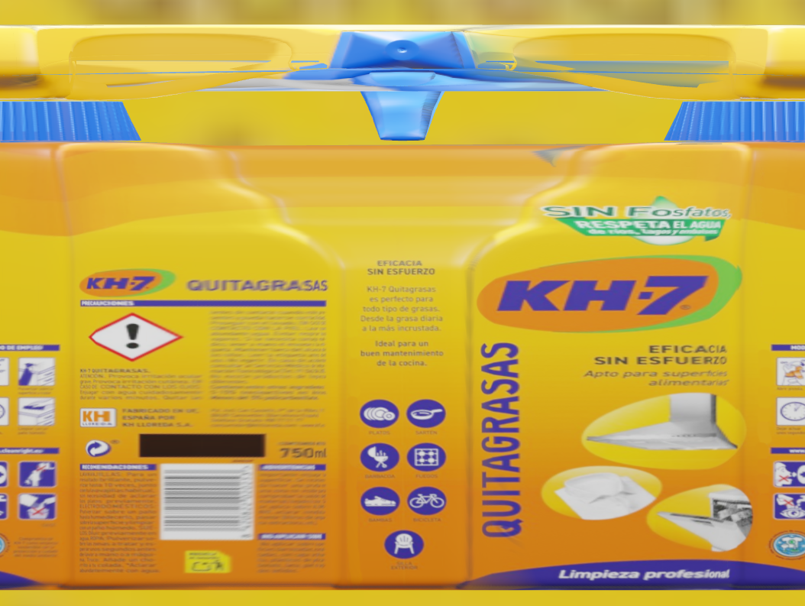
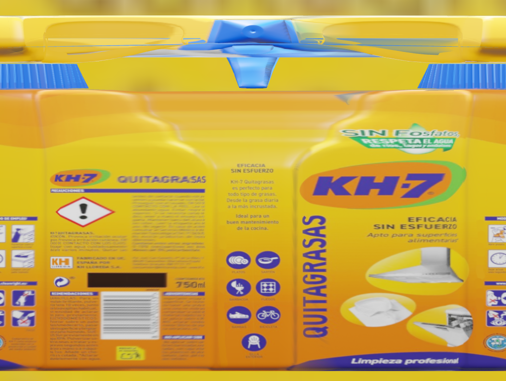
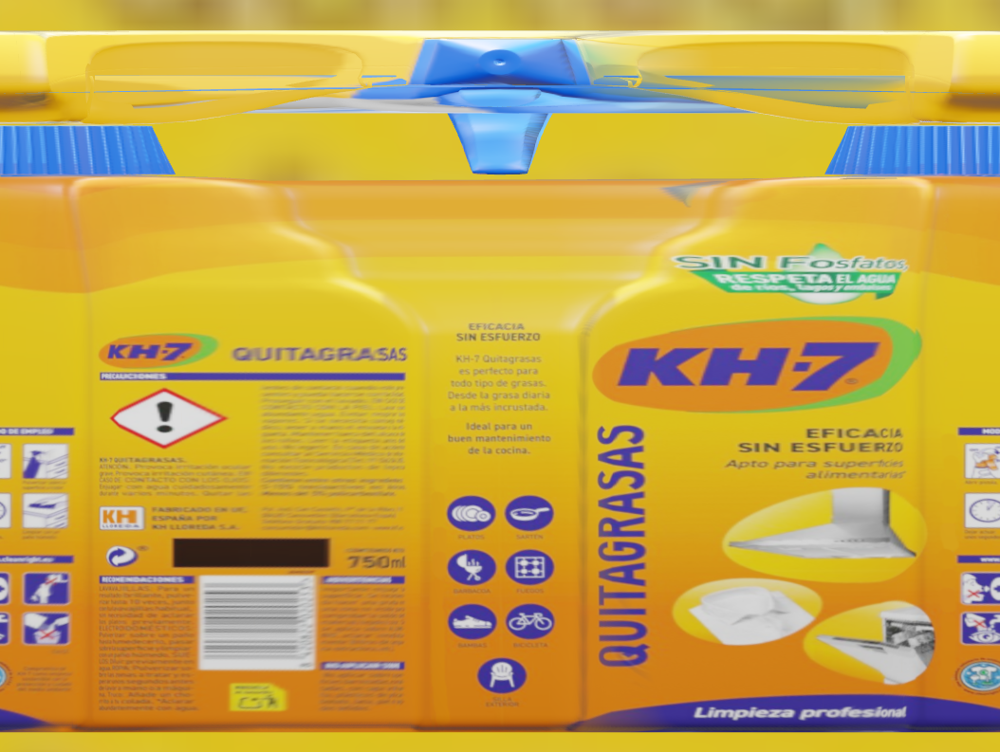

Instead of waiting for numerous physical samples of products to be shipped to us, we only need files containing the product labels and designs. This shift will allow us to fine-tune and launch new projects in a fraction of the time previously required.
With traditional methods, creating robust datasets for AI models requires significant time and physical resources. It involves collecting a great number of product samples, which need to be transported to our facilities. That process takes up considerable space and logistical effort. Once the samples arrive, an AI engineer needs to spend days capturing images of each object. And this labor-intensive process is just the beginning, as the captured images then have to be manually labeled before they can be used to train the models.
Our synthetic environment offers a highly efficient and innovative alternative. Instead of dealing with physical samples, clients now only need to send us files that are typically a few kilobytes in size. With these digital files, our team makes minimal, customer-specific adjustments to prepare the models. Then, our powerful PC's take over, rendering thousand of high-quality and perfectly annotated synthetic images.
By eliminating spatial limitations and drastically reducing the time required for dataset creation, our synthetic environment allows for faster, more efficient development of AI models, offering clients a streamlined and scalable solution.
The initial stages of our project focused on developing a real-time texture projection and remapping system using OpenGL. The goal was to create an efficient system for projecting textures from multiple camera perspectives onto a 3D model and remapping these projections to known UV maps of the model. This allowed for dynamic texturization of 3D models from various angles, creating the possibility of analyzing a deployed image with all object elements using deep learning models.

Today, our synthetic environment leverages this initial development, integrating sophisticated 3D modeling and rendering techniques with multiple automated processes. The UV unwrapping techniques developed can be seamlessly applied to our synthetic data, ensuring high-quality texture mapping.